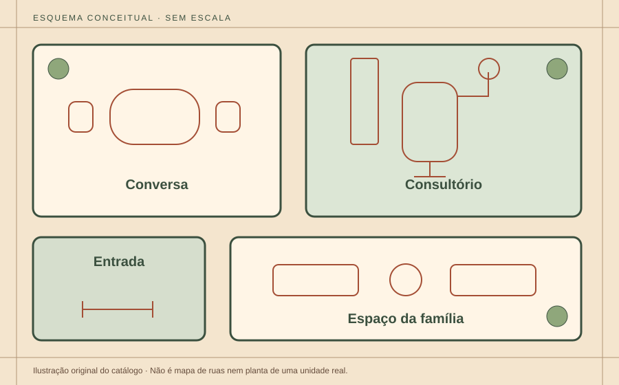

Entrada
Um ponto de chegada para conhecer o espaço.
Fotografias e esquema conceituais da direção Bairro; não representam uma clínica real.
Imagem1 de3
Esquema conceitual de ambientes. Não é planta de uma clínica real, mapa de ruas ou orientação para chegar.
Explore os ambientes pelos nomes abaixo. No esquema ativo, use os botões ou as setas do teclado; Home mostra tudo. A rolagem da página permanece livre.

Esquema ilustrativo estático.
Um ponto de chegada para conhecer o espaço.
Uma proposta de ambiente para ouvir e explicar.
Uma representação de área de atendimento.
Uma ideia de acolhimento para responsáveis e crianças.
Interação com Leaflet, sem mapas remotos ou geolocalização. Créditos e licença.
Endereço, horários, formas de chegada e acessibilidade precisam ser confirmados com a equipe da clínica. Esta demonstração não fornece uma localização real.
Antes de chegar